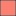
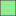
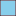

<!DOCTYPE html>
<html>
<head>
	<meta charset="utf-8">
	<html lang="pl">
	<title>PUWG 2000</title>
	<meta name="viewport" content="width=device-width, initial-scale=1.0">
	<link rel="stylesheet" href="https://unpkg.com/leaflet@1.7.1/dist/leaflet.css">
	<script src="https://unpkg.com/leaflet@1.7.1/dist/leaflet.js"
   integrity="sha512-XQoYMqMTK8LvdxXYG3nZ448hOEQiglfqkJs1NOQV44cWnUrBc8PkAOcXy20w0vlaXaVUearIOBhiXZ5V3ynxwA=="
   crossorigin=""></script>

	<link href="https://fonts.googleapis.com/css2?family=Montserrat&display=swap" rel="stylesheet"> 
   
	<script type="text/javascript" src="data/powiaty_puwg2000.js"></script>
	<script type="text/javascript" src="data/poludniki_osiowe.js"></script>
	
	 <link rel="stylesheet" href="css/styles.css">

</head>

<body>
	<div id='map'></div>

<script>
	var map = L.map('map', {minZoom: 5, maxZoom: 11}).setView([52.06940, 19.48027], 6);
	
	var OSM = L.tileLayer('https://{s}.tile.openstreetmap.org/{z}/{x}/{y}.png', {
		attribution: '&copy; <a href="https://www.openstreetmap.org/copyright">OpenStreetMap</a> contributors | marylaGIS'
		}).addTo(map);


	var info = L.control();

	info.onAdd = function (map) {
		this._div = L.DomUtil.create('div', 'info');
		this.update();
		return this._div;
	};

	info.update = function (props) {
		this._div.innerHTML = '<h3>STREFY UKŁADU PUWG 2000</h3>' +  (props ?
			'<b><p style="text-transform:uppercase;">' + props.nazwa + '</b><br />' +
			'strefa: ' + '<b>' + props.strefa + '</b>' +
			'<br>kod EPSG: ' + '<b>' + props.epsg + '</b>' +
			''
			: '<i>najedź kursorem na powiat</i>');
	};

	info.addTo(map);
	
	
	function highlightFeature(e) {
		var layer = e.target;
		layer.setStyle({
			weight: 2,
			color: 'black',
			//dashArray: '5',
			fillColor: 'yellow',
			fillOpacity: 0.7
		});

		if (!L.Browser.ie && !L.Browser.opera && !L.Browser.edge) {
			layer.bringToFront();
		}

		info.update(layer.feature.properties);
	}
	
	function resetHighlight(e){
		layer_powiaty_puwg2000.resetStyle(e.target);
		info.update();
	}


	function onEachFeature_pow (feature, layer) {
		layer.on({mouseover: highlightFeature,
					mouseout: resetHighlight});
		var popupContent = 
				'<b><p style="text-transform:uppercase;">' + feature.properties.nazwa + '</b>' +
				'<br>TERYT: ' + feature.properties.teryt +
				'<br>STREFA: ' + feature.properties.strefa +
				'<br>EPSG: ' + feature.properties.epsg;
		layer.bindPopup(popupContent);
	}

	function style_powiaty_puwg2000 (feature) {
			switch (feature.properties.strefa) {
				case 5: return {color: 'rgba(0,0,0,1.0)',
								weight: 0.75,
								fillColor: "Salmon",
								fillOpacity: 1,
								interactive: true,};
				case 6: return {color: 'rgba(0,0,0,1.0)',
								weight: 0.75,
								fillColor: "LightGreen",
								fillOpacity: 1,
								interactive: true,};
				case 7: return {color: 'rgba(0,0,0,1.0)',
								weight: 0.75,
								fillColor: "#ffffb3",
								fillOpacity: 1,
								interactive: true,};
				case 8: return {color: 'rgba(0,0,0,1.0)',
								weight: 0.75,
								fillColor: "SkyBlue",
								fillOpacity: 1,
								interactive: true,};
			}
	};
	
	var layer_powiaty_puwg2000 = L.geoJSON(powiaty_puwg2000, {
		interactive: true,
		dataVar: 'powiaty_puwg2000',
		onEachFeature: onEachFeature_pow,
		layerName: 'layer_powiaty_puwg2000',
		style: style_powiaty_puwg2000,
	}).addTo(map);


	function onEachFeature_pol (feature, layer) {
		var popupContent = feature.properties.E + '<sup>o</sup> E';
		layer.bindPopup(popupContent).openPopup();
	}

	var layer_poludniki_osiowe = L.geoJSON(poludniki_osiowe, {
		onEachFeature: onEachFeature_pol,
	});
	

	var baseLayers;
	
	var overlays = {
		"POWIATY<table><tr><td></td><td>strefa 5</td></tr><tr><td></td><td>strefa 6</td></tr><tr><td></td><td>strefa 7</td></tr><tr><td></td><td>strefa 8</td></tr></table>":  layer_powiaty_puwg2000,
		"POŁUDNIKI OSIOWE": layer_poludniki_osiowe,
	};
	
	L.control.layers(baseLayers, overlays, {collapsed:false, position:'bottomright'}).addTo(map);
	
	
	L.control.scale({imperial: false, maxWidth: 200}).addTo(map);

</script>
</body>
</html>
